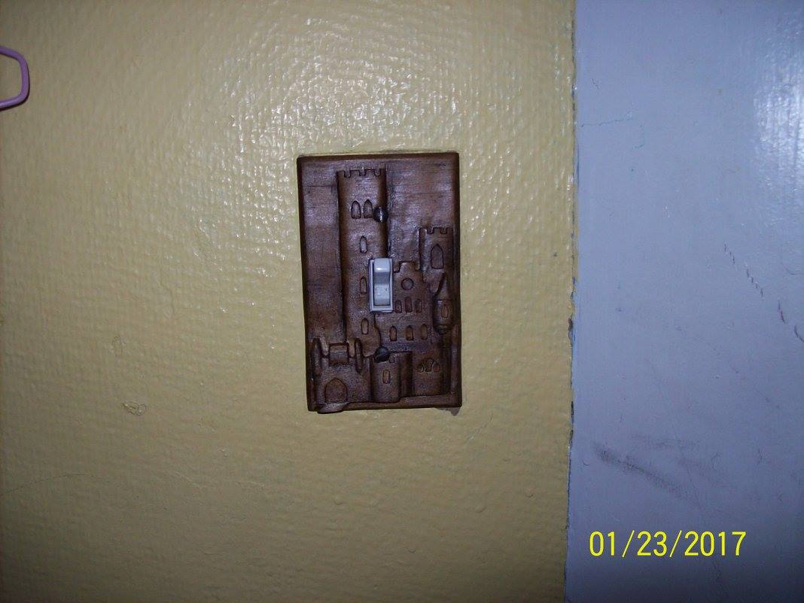
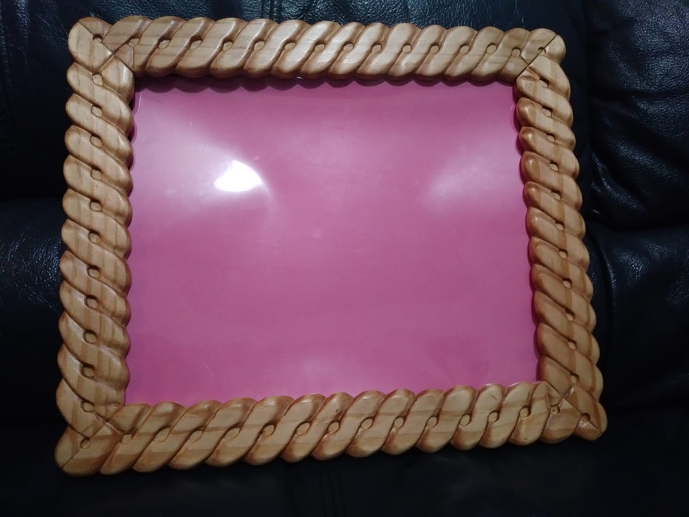

Sometimes woodworking can seem daunting, especially to a beginner.
But not to worry! I was able to do many of these projects within the first year or two.
You'll get better,
learn some things, and have new plans and ideas. It's okay if it takes a couple tries.
My first real success. Prior to this handmade chess set, I had only made a lot of misshapen lumps of wood. It was also the longest project I ever did--it took me 3 years! And yes, we took it out for a spin immediately. I won.
Who wants a boring plastic lightswitch cover? I've always loved castles and other medieval thingsand I wanted to add a little castle to my room.
When my dad had hip surgery, I set out to make him a cane that was more stylish than titanium. This cane has vine patterns swirling up to the handle.
This frame has a cool story. I submitted it to a silent auction to raise money for a local ministry. My friend's parents came to the auction, where I met them for the first time. Without knowing I had made the frame, they bid on it and won. Later, I married that friend, and his parents now keep our wedding photo in that frame.
It's not for stabbing--it's only wood after all. It's a pretty, decorative knife that I hang on my wall. It makes me feel cool.
Anna Lewis Campbell
aalxbt@umsystem.edu